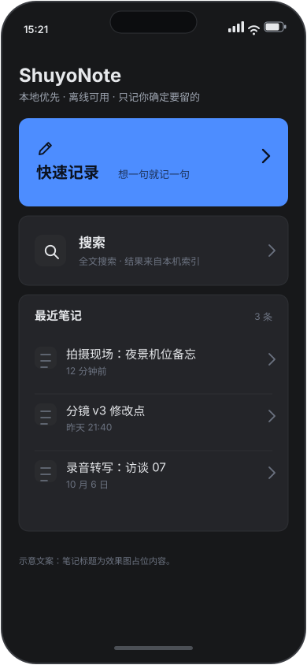
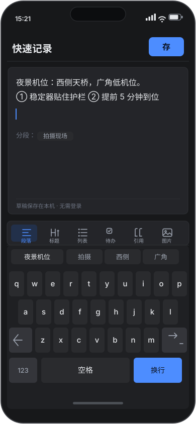
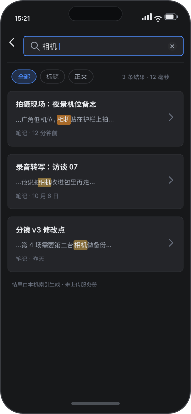
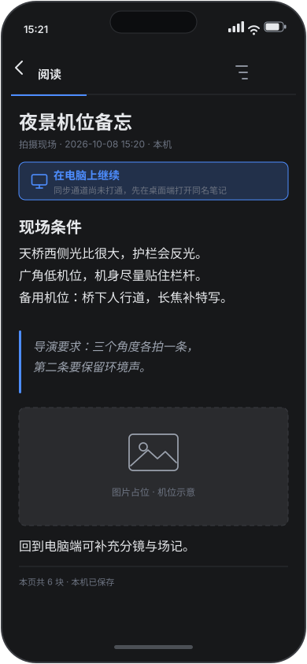
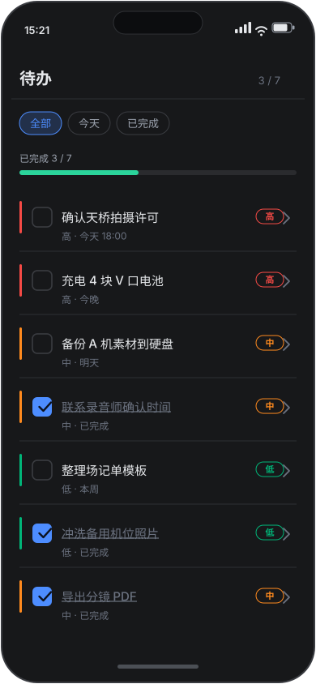
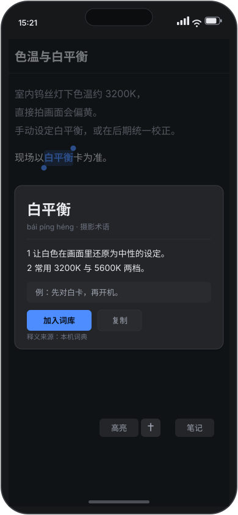
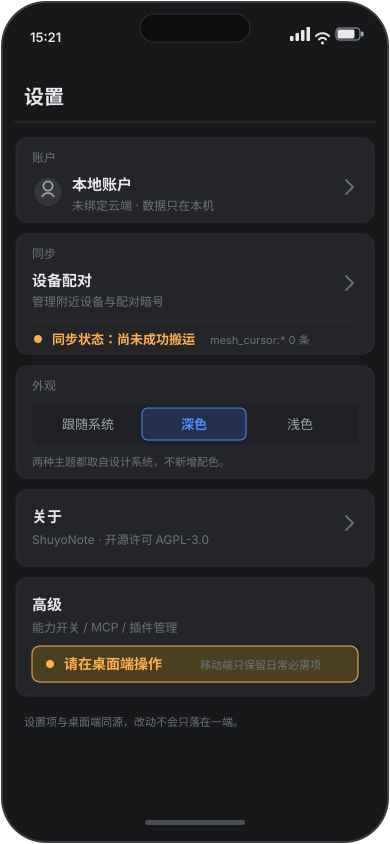
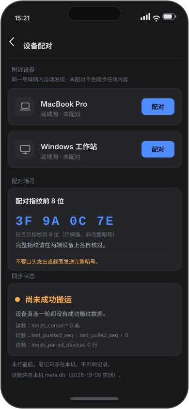
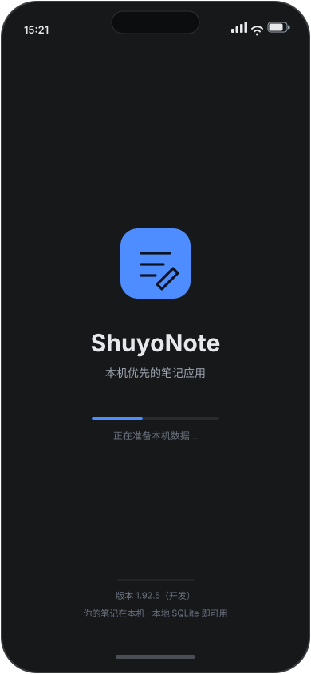
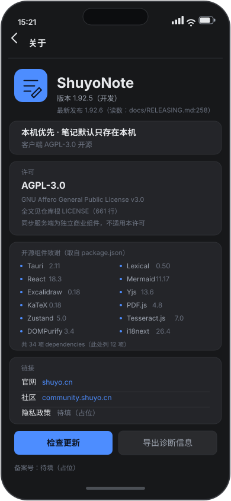

| 维度 | 关键读数 | 状态 | 判据（逐字） |
|---|---|---|---|
| 设计（说明书/需求/技术方案） | 说明书 676 行 · 需求 144 行 · 技术方案 423 行 | ✅ 已成文 | 文档在 docs/plans/mobile/2026-10-08-mobile-spec.md 等三份 ✓ |
| 效果图 | 10 张 SVG（首页…配对、启动页、关于页） | ✅ 已出图 | `docs/plans/mobile/mockups/` ✓ |
| 界面适配（代码） | mobile 相关 npm 脚本 18 条 | ✅ 在仓里 | `package.json` ✓ 门禁：mobile-layout / mobile-views / mobile-overlays ✓ |
| Android 出包 | `.github/workflows/android.yml` 在 ✓（带签名的自测包） | ⚠️ 我没在本机验过 | 本机**没有** adb/SDK/NDK ✗ ⇒ 我只能引用 CI，不能给本机读数 ✗ |
| iOS 出包 | 卡在**最后一个**符号族（Swift private） | ⛔ 未出包 | R168：已修 llvm-tools（6 个 C 符号 6/6 ✓）；剩 `Tauri.StdoutRedirector.start()` 一族 ✗ ⇒ 属上游 |
| 真机通道 | 设备在线：zhiyong的iPhone | ✅ 通道通 | 曾用 devicectl 装并启动成功（`App installed` ＋ `Launched` ✓） |
| 同步（前置条件） | 我 Mac 上 `plugin_data`／`sync_state` 均 0 行 | ⛔ 未通 | R175 的判据②：同步端到端搬通一次 ✓ —— 还没到 |










| 卡点 | 性质 | 下一步（判据） |
|---|---|---|
iOS：Tauri.StdoutRedirector.start() 一族未定义 | 上游（swift-rs 只外化 @_cdecl 候选；插件各编一份 Tauri Swift） | 已写上游 issue 草案 ✓；判据＝pnpm tauri ios build 出 BUILD SUCCEEDED ＋ 新 .ipa |
| 同步未端到端搬通 | 前置条件（没有它手机版是孤岛） | 已发对齐信请 windows 指一块 ✓；判据＝mesh_paired_devices 非 0 且一次搬运成功 |
| Android 本机无法验 | 本机缺工具链（无 adb/SDK/NDK，也没有 Homebrew 之外的路） | 要验就得装 Android 工具链（要你点头 ✓） |
台账 R175：移动端立项＝做 ✓ ⇒ 长期义务四类（上架／合规／持续发版／真机验收）＋ 判据三条（出包 ✓／同步搬通 ✓／合规材料非占位 ✓）。